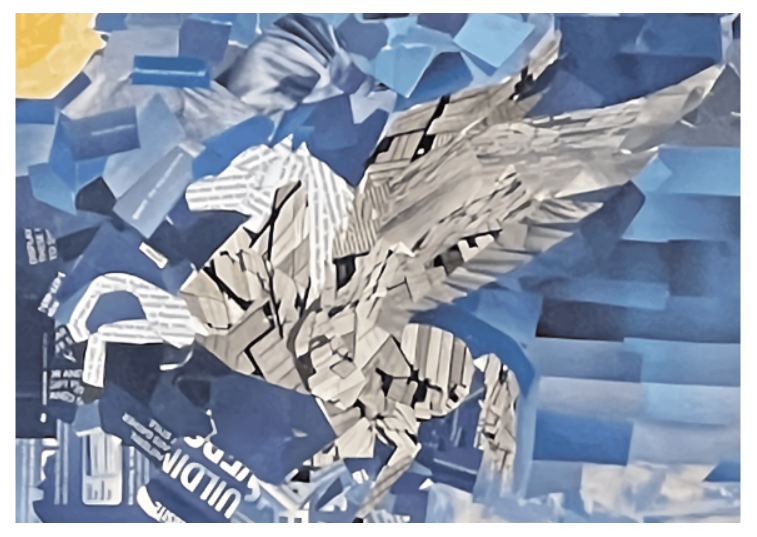

Torn paper Montage art involves tearing colored paper into different shapes and sizes, and then layering or overlapping these torn pieces to create a collage. The jagged edges of the torn paper add texture and movement to the artwork, resulting in interesting visual effects. This technique can be used to create realistic images, such as portraits, or abstract compositions. I've been inspired by the color blue, consider using various shades of blue paper to depict a majestic pegasus in your torn paper montage.
Two-point perspective Cityscape is a drawing technique that creates the illusion of depth and three-dimensionality by using two vanishing points on the horizon line. It’s commonly used to depict urban scenes, buildings, and streets. I created your own unique cityscape inspired by street food at night and classical buildings.
Notan is a Japanese design concept that relates to the play of light and dark and how they are placed next to each other. The positive shapes (main objects) in a work of art should balance or complement the negative shapes (the empty space around the main objects.) I created my own unique notan inspired by Halloween holiday.
3D paper sculpture is a captivating art form that transforms ordinary paper into intricate, three-dimensional creations. Artists meticulously fold and manipulate paper to craft stunning sculptures that defy expectations.
Scratchboard, also known as scraperboard, is a fascinating art technique where the artist scratches off dark ink to reveal a white or colored layer beneath. To create a scratchbord, I get the ideas from mental health
Stippling is a fascinating drawing technique that involves creating images, patterns, and textures using tiny dots. Instead of using continuous lines or shading, stippling relies on hundreds or thousands of small dots to achieve smooth gradations of line, tone, and shade.